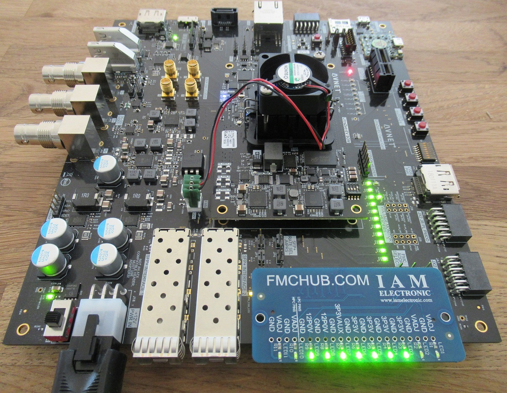

- Passive plug-in module, no configuration required
- Works at up to 10 Gbit/s with multi-gigabit transceivers
- 11x LEDs for visual feedback of the applied supply voltages
- High-Pin Count (HPC) connector according to ANSI/VITA 57.1 FMC
- Mates with HPC or LPC carrier boards
- All FMC data and clock pins are completely controlled by the FPGA
- Optional pin header (2.54 mm pitch) for voltage monitoring
- Practical design for the best price-performance ratio
- 2-layer printed circuit board (PCB)
- Reference designs are available
- Open source hardware

The photos below show the top side with LEDs to indicate applied voltages and bottom side with HPC mezzanine card connector (MC-HPC-10).
- Easy prototyping and analysis of high-speed data links
- Testing and debugging FMC carrier boards
- Fast verification of signal integrity on FMC carrier boards
- Research and education with FPGAs
The FMC Loopback Module is a passive plug-in adapter for ANSI/VITA 57.1 FPGA Mezzanine Card (FMC) connectors. The loopback board is designed to mate a High-Pin Count (HPC) connector, but also fits without restrictions to Low-Pin Count (LPC) connectors. According to the FMC standard, all signals of an FPGA IO bank (LA, HA and HB bank) are connected by the mezzanine board as loopback. This means that each pin of an IO bank has a fixed endpoint through the FMC loopback card. These signal pairs must be defined as In/Out pairs in the FPGA on the carrier side. Apart from that necessary IO constraints, the FMC Loopback Board does not require any further configuration for its full functionality. An FMC loopback test of an FMC carrier board is essential to identify production faults (e.g. defective solder joints of the FPGA package or FMC connector). In addition to production tests, a loopback test reveals information about the signal integrity on the carrier board (e.g. by eye scans). Finally, the FMC loopback module can be used to implement high-speed data links at an early prototyping stage, where the transmitter and receiver logic is controlled by a single FPGA. Such a performance test can be used to determine latency, throughput or data loss of high-speed serial data links (e.g. JESD204B).
The FMC loopback module is suitable for checking the user-defined data signals (LA, HA or HB bank signals), the user clock signals (CLKx_M2C_P/N, CLKx_C2M_P/N) or the multi-gigabit transceiver signals (DPx_C2M_P/N, DPx_M2C_P/N) with the corresponding clock signals (GBTCLKx_M2C_P/N). Depending on which FMC connector is used on the carrier, the pins available for a loopback test must be selected accordingly. In almost all cases the carrier has a fully occupied connector according to ANSI/VITA 57.1 LPC definition.
2.1 Low-Pin count (LPC) connector loopback
The pins used by the LPC connector are a subset of the High-Pin count (HPC) connector's pins. There are in total 34 differential
pairs for user data (LAx_P/N pins), 2 diff. pairs dedicated to user clock signals, 1 multi-gigabit transceiver consisting
of 1 diff. TX pair (DP0_M2C_P/N) and 1 diff. RX pair (DP0_C2M_P/N) with corresponding reference clock (GBTCLK0_M2C_P/N).
All these signals can be used in a loopback test. Optionally, the JTAG pins TDI and TDO can be short-circuited on the PCB and
the PRSNT_M2C_L signal can be connected to GND. A typical application with an LPC carrier board is shown below.
 Fig. 1: FMC Loopback Module plugged on LPC carrier board (Digilent Nexys Video™ Board, 410-316).
Some carrier boards require the PRSNT_M2C_L pin to be pulled down, indicating that a mezzanine module is present
and therefore supply voltages may be activated or adjusted. In case that all supply voltages are switched on by the
carrier, the FMC loopback card's LEDs will light up. Fig. 1 shows the case where the carrier board is switched off,
but the 12 V supply rail still supplies the LEDs, because the DC power supply is plugged into the board.
After the carrier is switched on, the following situation occurs.
Fig. 2: FMC Loopback Module plugged on switched on LPC carrier board.
Please note that the voltage pins VADJ (2x on the LPC connector, 4x in total on a HPC carrier) are an adjustable voltage level
from the carrier to the mezzanine card in the range of 0 .. 3.3 V. Typical values are
1.2 V, 1.8 V, 2.5 V or 3.3 V. In case the voltage VADJ is set below the LEDs forward voltage of 2.1V
the LEDs associated to these pins (LED1, LED2, LED10, LED11) will not light up. To check the correct voltage level, you must measure
directly at the test points next to the LEDs with a voltmeter.
Fig. 3: FMC Loopback Module plugged on LPC carrier board with too low voltage level on VADJ pins (left) and sufficient voltage level (right).
An important detail is that the GND pins on the loopback bard are not tied together! In case an LED does not light up, the
reason is either a low voltage, a defective voltage pin or a defective GND pin on the carrier (device under test)!
The test of the supply voltages with the LEDs gives a first quick impression about possible errors of the DUT. A test of the data lines gives
of course a much more detailed insight into the correct function, and should be always carried out. Fig.4 shows an overview of the available
data lines of an LPC carrier with attached FMC loopback board.
Fig. 4: Blockdiagram of the FMC Loopback Module's Low-Pin-Count (LPC) pins. This is only a subset of all available pins on the board.
Please note that in an LPC only configuration, the user data pair LA18_P/N has no endpoint, because the target pins GBTCLK1_M2C_P/N are located in the HPC rows of
the connector.
Furthermore it has to be mentioned that a clocking of the Gigabit-transceiver by FPGA output pins does not achieve best performance. But in order to keep
the operation of the board as simple as possible, we have chosen to provide an internal clock generation by the FPGA over a programmable external clock
source. So the user don't have to deal with other devices and can stick to the same FPGA device. This approach provides maximum flexibility
in clock generation and also allows data rates up to 10 Gbit/s (see section 2.2 HPC loopback).
2.1.A Eye-scan reference design with clock from silicon MEMS oscillator
Fig. 1: FMC Loopback Module plugged on LPC carrier board (Digilent Nexys Video™ Board, 410-316).
Some carrier boards require the PRSNT_M2C_L pin to be pulled down, indicating that a mezzanine module is present
and therefore supply voltages may be activated or adjusted. In case that all supply voltages are switched on by the
carrier, the FMC loopback card's LEDs will light up. Fig. 1 shows the case where the carrier board is switched off,
but the 12 V supply rail still supplies the LEDs, because the DC power supply is plugged into the board.
After the carrier is switched on, the following situation occurs.
Fig. 2: FMC Loopback Module plugged on switched on LPC carrier board.
Please note that the voltage pins VADJ (2x on the LPC connector, 4x in total on a HPC carrier) are an adjustable voltage level
from the carrier to the mezzanine card in the range of 0 .. 3.3 V. Typical values are
1.2 V, 1.8 V, 2.5 V or 3.3 V. In case the voltage VADJ is set below the LEDs forward voltage of 2.1V
the LEDs associated to these pins (LED1, LED2, LED10, LED11) will not light up. To check the correct voltage level, you must measure
directly at the test points next to the LEDs with a voltmeter.
Fig. 3: FMC Loopback Module plugged on LPC carrier board with too low voltage level on VADJ pins (left) and sufficient voltage level (right).
An important detail is that the GND pins on the loopback bard are not tied together! In case an LED does not light up, the
reason is either a low voltage, a defective voltage pin or a defective GND pin on the carrier (device under test)!
The test of the supply voltages with the LEDs gives a first quick impression about possible errors of the DUT. A test of the data lines gives
of course a much more detailed insight into the correct function, and should be always carried out. Fig.4 shows an overview of the available
data lines of an LPC carrier with attached FMC loopback board.
Fig. 4: Blockdiagram of the FMC Loopback Module's Low-Pin-Count (LPC) pins. This is only a subset of all available pins on the board.
Please note that in an LPC only configuration, the user data pair LA18_P/N has no endpoint, because the target pins GBTCLK1_M2C_P/N are located in the HPC rows of
the connector.
Furthermore it has to be mentioned that a clocking of the Gigabit-transceiver by FPGA output pins does not achieve best performance. But in order to keep
the operation of the board as simple as possible, we have chosen to provide an internal clock generation by the FPGA over a programmable external clock
source. So the user don't have to deal with other devices and can stick to the same FPGA device. This approach provides maximum flexibility
in clock generation and also allows data rates up to 10 Gbit/s (see section 2.2 HPC loopback).
2.1.A Eye-scan reference design with clock from silicon MEMS oscillator
| Board: | Digilent Nexys Video Artix-7 FPGA |
| FPGA: | Xilinx XC7A200T-1SBG484C |
| Repository / Download: | https://www.github.com/fmchub |
| Notes: | Reference clock is 135 MHz generated by external oscillator on carrier board |
| Board: | Digilent Nexys Video Artix-7 FPGA |
| FPGA: | Xilinx XC7A200T-1SBG484C |
| Repository / Download: | https://www.github.com/fmchub |
| Notes: | Reference clock is 125 MHz generated by built-in Xilinx PLL out of 100 MHz clock. The generated clock is output by the FPGA via pins LA01_P/N and routed to pins GBTCLK0_M2C_P/N through the loopback adapter. |
2.2 HPC loopback Since the LPC connector is a subset of the HPC connector, all previous instructions also apply to the HPC connector. Looking at the power test with the LEDs, this time of course all LEDs must light up if the VADJ voltage reaches a valid voltage level. Below is an example application where the FMC loopback board is attached to an FMC HPC carrier board (Avnet UltraZed-EV with Carrier Card).  Fig. 7: FMC Loopback Module plugged on HPC carrier board (Avnet UltraZed-EV with Carrier Card). Even if the adjustable voltage is for that example below the forward voltage of the LEDs (2.1 V), you can still see a dimmed light. Fig. 8: FMC Loopback Module plugged on HPC carrier board with VADJ of 1.8 V. A dimmed light of the LEDS (LED1, LED2, LED10, LED11) is visible. The HPC connector has in total 160 user data lines. That means 80 differntial pairs, or for a loopback application 40 differential pairs for transmitting data and 40 differential pairs for receiving data. These signals are divided into the banks LA, HA, HB on the connector. Additionally there are 10 Multi-gigabit transceiver (10 transmitter and 10 receiver) available along with 2 differntial clock input pairs, which can be sourced from LA01_P/N pins and LA18_P/N. Further, there are 2 general purpose clock transmitter and 2 clock receiver pairs connected through the loopback adapter. The block diagram in fig. 9 gives a schematic overview of all signals. Fig. 9: Blockdiagram of the FMC Loopback Module's High-Pin-Count (HPC) pins. With Xilinx IBERT core, the FMC loopback module achieves a throughput of 10 Gbit/s per MGT lane, which is in total 8x 10 Gbit/s. The HPC carrier does only provide 8 out of 10 MGT lanes. Fig. 10: The FMC Loopback Module is capable of a maximum throuput of 8x 10 Gbit/s over multi-gigabit transceiver. The HPC carrier does only provide 8 out of 10 MGT lanes. Eye scans were performed at 4 different lane rates from 2.970 Gbit/s up to 10 Gbit/s. Fig. 11: An Eye-scan with FMC loopback board and Xilinx IBERT core at 2.970 GBit/s MGT lane rate. Fig. 12: An Eye-scan with FMC loopback board and Xilinx IBERT core at 5.940 GBit/s MGT lane rate. Fig. 13: An Eye-scan with FMC loopback board and Xilinx IBERT core at 8.500 GBit/s MGT lane rate. Fig. 14: An Eye-scan with FMC loopback board and Xilinx IBERT core at 10.000 GBit/s MGT lane rate.
2.3 General information At this point it is important to mention again that the FMC Loopback module has been optimized for the best price/performance ratio. All results were achieved with a 2 layer PCB with FR-4 material. The signal lanes are not impedance controlled!
The printed circuit board is open-source hardware! You can download the FMC Loopback Module schematics and FMC Loopback board layout files in their latest revision from http://www.fmchub.com. Tab. 1: Bill of materials (BOM) of FMC Loopback Board
| Comment | Description | Designator | Manufacturer | Partnumber | Qty |
| LED green | SMD mono-color Chip LED, WL-SMCW, Green | LED1, ..., LED11 | Wuerth Elektronik | 150060GS75000 | 11 |
| MC-HPC-10 | MC-HPC-10, FMC High-pin count connector, lead free, 400 I/Os, male, 10 mm mated stack height | P1 | Samtec | ASP-134488-01 | 1 |
| 100R | 100R 0.1W 5% 0603 (1608 Metric) SMD | R1, ..., R7, R10, R11 | Panasonic | ERJ-3GEYJ101V | 9 |
| 1K8 | 1K8 0.1W 5% 0603 (1608 Metric) SMD | R8, R9 | Yageo | RC0603JR-071K8L | 2 |
| Source | Destination | Trace width | Trace length | ||
| A2 | DP1_M2C_P | A22 | DP1_C2M_P | 0.x mm (x mil) | 0.x mm (x mil) |
| tbd | tbd | tbd | tbd | tbd | tbd |
The board outline is not defined by ANSI/VITA 57.1 standard. It was chosen in such a way that the space requirement is very small. However, the outer dimensions do not exceed the defined outlines of the ANSI/VITA 57.1 FMC standard, so the FMC loopback board should fit on any FMC carrier board. Exact dimensions are given in figure 15. Fig. 15: Mechanical drawing of the FMC Loopback Module. The mounting holes are plated but have no electrical connection. Their sizes and positions are in accordance with ANSI/VITA 57.1.
 Fig. 16: Product photo of FMC Loopback Module (top view).
Fig. 16: Product photo of FMC Loopback Module (top view).
 Fig. 17: Product photo of FMC Loopback Module (bottom view).
Fig. 17: Product photo of FMC Loopback Module (bottom view).
| Product no. | Description | Market place | Request quote | Standard lead time |
| T0007 | FMC Loopback Module with MC-HPC-10 connectors and green LEDs. | Ebay #tbd Tindie tbd#11490 Designspark#tbd | info@iamelectronic.com | Normally in stock, otherwise 3 weeks |